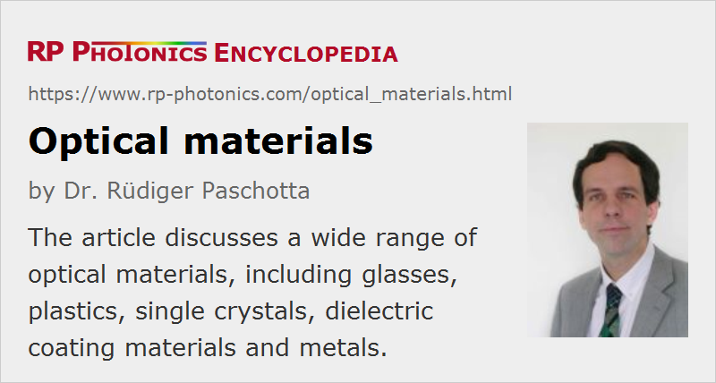

Optical Materials
Definition: materials used for optical components
More specific terms: optical glasses, optical crystals, semiconductors, ceramics, coatings, metals
German: optische Materialien
How to cite the article; suggest additional literature
Author: Dr. Rüdiger Paschotta
Various kinds of materials are used for making optical elements. Optical materials are usually understood to be transparent materials, i.e., materials with good light transmission in some spectral ranges, exhibiting little absorption and scattering of light. However, absorption can be utilized for optical filters, and even light scattering is utilized in some applications. Furthermore, some materials are useful for making optical components which do not transmit light; for example, some materials with full transparency can be used as substrates for laser mirrors.
In this article, different classes of optical materials are described, and their most important properties are explained.
Inorganic Glasses
The mostly used optical materials are optical glasses made of inorganic compounds, containing chemical species like silicon, oxygen, sodium, aluminum, germanium, boron and lead.
Only in few cases, one uses pure materials with very few chemical constituents; the most prominent example is fused silica glass (silicon dioxide, SiO2), which is widely used for bulk optics. It is also used in the form of silica fibers; here, however, the fiber core is usually doped with some other material, e.g. with germanium.
There are also many silicate glasses, where various other mineral substances are mixed with silica to obtain glasses with modified properties:
- For example, sodium carbonate, calcium oxide, magnesium oxide and aluminum oxide can be added to obtain soda-lime glasses, as are common for windows. As far as they have relatively low reflective indices and low dispersion, they are called crown glasses.
- Increased refractive indexs, usually coming together with increased dispersion, are obtained by adding heavier materials like barium, lead, thorium, zirconium, titanium or lanthanum (usually as oxides). Such glasses are called flint glasses. In the early times, they mostly contained the poisonous lead; this has later largely been replaced with other metals like titanium or zirconium.
- Borosilicate glasses exhibit much reduced thermal expansion and are therefore much more resistant against thermal shocks.
- Aluminosilicate glasses are extensively used for glass fibers, including rare-earth-doped fibers for fiber amplifiers and lasers. They are relatively resistant to heat.
- Germanosilicate glasses are also common for optical fibers, particularly for telecom fibers, exhibiting very low propagation losses.
- Fluoride glasses and fluorophosphate glasses can be used as high-index low-dispersion glasses, e.g. for the construction of achromatic optics.
- Phosphate glasses hare used e.g. for some rare-earth-doped fibers, particularly if high doping concentrations are required.
- Further additions like iron can be used to obtain infrared absorption (e.g. for heat-absorbing filters), or cerium for ultraviolet absorption.
Some glass types used in optics and photonics contain poisonous substances like lead and cadmium. Although that hardly creates hazards during use, since those substances are tightly bound in the glass, there are serious attempts to ban their use wherever possible, since it is hard to ensure that those materials are properly handled after use so that they cannot get into the environment.
For further details, see the article on optical glasses.
Crystalline Materials
Insulators
In contrast to glasses, which are amorphous, crystalline materials exhibit a long-range microscopic order. Most crystalline optical materials are monocrystalline (single crystal materials), since light scattering at interfaces between grain boundaries could be detrimental. Optical crystals are basically always artificially grown materials. The growth velocity is usually very small because otherwise one would not obtain a single crystal. Therefore, crystalline optical materials tend to be more expensive than glasses or ceramics.
One reason to use crystals instead of glasses can be to obtain an extended spectral transmission range. This is particularly so in the mid and far infrared, where there is a limited choice of materials with good transparency.
In some cases, optical anisotropy is required, for example in the form of birefringence, which is obtained for crystalline materials with not too high crystal symmetry. For example, polarizers and other types of polarization optics are made from calcite crystals. Also, the Pockels effect, as exploited in electro-optic modulators, occurs only in crystalline materials. Other crystal materials (but also glasses) are used in acousto-optic devices.
Further, there are various types of laser crystals which are crystalline insulators doped with laser-active ions (→ doped insulator lasers). Here, not only the optical properties are of interest. It is particularly important how the laser-active ions interact with the host glass; the properties of the pump and laser transitions can strongly depend on the glass type.
Other doped crystals are used as saturable absorbers, e.g. for Q switching of lasers.
Finally, various crystal materials of low crystal symmetry are used for nonlinear frequency conversion, based on their χ(2) nonlinearity.
Optical crystals, particularly those without special dopants, are highly pure materials with very consistent optical properties – in contrast to glasses, where the exact composition of the used raw materials may somewhat vary, and there are certain fluctuations of the local chemical composition.
Semiconductors
Semiconductors are not transparent in the visible spectral region, because their band gap energy is smaller than the photon energy of visible light. However, they exhibit good transparency in the infrared. For example, silicon, germanium and gallium arsenide are used for infrared optics. The refractive index is usually rather high.
In some cases, semiconductor materials are used for infrared optical windows. However, there are also applications where special optical properties of semiconductors are exploited. For example, there are nonlinear frequency conversion devices with quasi-phase-matched gallium arsenide. There is also the whole research area of silicon photonics, involving integrated optics on the basis of silicon.
Polycrystalline Ceramics
Polycrystalline materials have found some applications in optics. Their basic challenge is the light scattering at grain boundaries. However, certain transparent ceramic materials like alumina (Al2O3) and yttrium aluminum garnet (YAG = Y3Al5O12) have been developed with good optical quality including low scattering losses; this can be achieved if the used materials are very pure and the particles of the raw material have very small dimensions, so that the grains also become very small (with nanometer dimensions). Another important factor are long operating wavelengths (i.e., for infrared optics), since scattering becomes rapidly stronger at shorter wavelengths.
The optical properties of ceramics can be similar to those of glasses. Therefore, ceramic materials can be used for many types of optical components such as lenses, prisms, optical windows, etc. For example, one can use ceramic windows for thermal imaging and night vision devices.
For lasers, YAG (yttrium aluminum garnet) ceramics have been developed, which can also be doped e.g. with neodymium. The obtained laser gain medium are very similar to Nd:YAG single crystals but can be cheaper, particularly when large dimensions are needed. See the article on ceramic gain media for more details.
An advantage of ceramics over single crystals is that (similar to glasses) they can be made with very large dimensions without a time-consuming crystal growth procedure.
Organic Polymers
Various polymeric materials (plastics) exhibit good transparency, mostly in the visible spectral range and to some extent in the infrared. Since they are amorphous, they are also called organic glasses. For various applications, they have a number of attractive properties:
- They can generally be fabricated at low cost, e.g. with molding and embossing processes, which also can be used for obtaining aspheric surface shapes. Sometimes, they can be fabricated together with their mounts.
- They are lightweight and less fragile than glasses.
- They can easily be equipped with dyes for obtaining optical filters.
- Some applications require very soft materials, for example optical silicone.
On the other hand, the achievable optical quality is generally lower than with glasses. Also, plastic objects are relatively sensitive to temperature changes. For applications with lasers, they are often not suitable. Typical applications are ophthalmology, miniature photo cameras and optical data storage.
See the article on plastic optics for more details.
Materials for Optical Coatings
Various transparent materials are used for making dielectric coatings, i.e., anti-reflection coatings, mirror coatings and others for thin-film polarizers. In the simplest cases, a thin film of one material only may be sufficient e.g. as an AR coating, if its refractive index is roughly the square root of the refractive index of the substrate material. In other cases, multilayer coatings are fabricated. Mostly, one uses amorphous dielectric materials, although there are also crystalline mirrors with semiconductor multilayer structures, which are produced with totally different techniques.
Apart from the optical properties it is important that the materials are suitable for use in certain deposition processes. They should easily and consistently form high-quality layers with good thickness uniformity, high optical homogeneity, low scattering and absorption losses and good adhesion to the substrate.
Some common coating materials are not ideal in all respects. For example, titanium dioxide (TiO2) is often used as a high-index material in multilayer coatings, but depending on the deposition process, different densities of that material may result. Low-density variants not only have a lower refractive index, but are also more sensitive to environmental conditions; in particular, water vapor may be absorbed, and that modifies the optical properties of the coating. Other materials like silica are much less sensitive to such effects. There are also deposition methods (e.g. IAD = ion-assisted deposition) which produce relatively dense coatings even with TiO2.
In any case, one should be aware that the refractive indices can vary to some extent, depending on the used deposition method and even on the environmental conditions during operation.
Essential Properties of Transparent Optical Materials
Optical Properties
The following properties are usually relevant for the use of optical materials:
- A high degree of transparency in the relevant wavelength range is usually required. Transparency is mostly limited by absorption processes – either the intrinsic absorption of the material or absorption from impurities – and sometimes also by light scattering at inhomogeneities. Diagrams for the transmittance versus wavelength, as often found in the literature, can also contain the effect of Fresnel reflections at the end faces of a block of the material.
- Good optical homogeneity is also often required.
- The refractive index tells by which amount the phase velocity of light is reduced in the material, compared with vacuum. Its wavelength dependence determines the chromatic dispersion, which may be quantified in different ways, e.g. via the wavelength-dependent group velocity dispersion (GVD) or roughly with the Abbe number (where high values indicate low dispersion).
- Most optical materials are optically isotropic, i.e., the optical properties do not depend on the direction of light propagation and polarization. However, some optical materials are anisotropic and subsequently birefringent, which means that the refractive index depends on the propagation direction at the polarization direction. There may also be a dependence of absorption losses on the propagation direction or polarization.
Sometimes, further optical properties are also important:
- A frequently relevant quantity is the temperature derivative of the refractive index (dn / dT). For glasses, it can be positive or negative, so that in some situations it is possible to achieve temperature compensation by proper combinations of materials.
- Optical nonlinearities, quantified e.g. with the nonlinear index, can play a role for applications involving high optical intensities, e.g. in mode-locked lasers and amplifiers.
- Some materials emit fluorescence, e.g. under UV irradiation.
Other Properties
Various other properties can also be relevant for applications:
- Mechanical properties, particularly Young's modulus, yield point, hardness and robustness or fragility, are essential in many cases – partly for the operation and partly for the fabrication.
- The threshold for optical damage via laser-induced breakdown can strongly depend on the used materials.
- The thermal shock resistance depends not only on hardness, but also on thermal expansion coefficients.
- Optical elements have a limited temperature range in which they can be used, e.g. due to melting or softening. This applies particularly to plastic optics.
- Some materials are less resistant than others to irradiation with ultraviolet light or higher energy radiation (e.g. in space applications), which may generate color centers and thus reduce the transparency.
- The chemical stability may be relevant if optical materials come into contact with certain fluids (e.g. water) or gases (e.g. water vapor and oxygen). It may be substantially lower for operation at elevated temperatures.
- Most optical materials are electrical insulators, but there are applications where some electrical conductance is required, for example for shielding purposes.
- Some material properties can be relevant for the fabrication processes. This applies to mechanical properties, for example. As another example, glasses with a too narrow glass transition temperature range are difficult to draw into optical fibers.
- The compatibility with other materials or dielectric coatings, e.g. in terms of thermal expansion coefficient, can also be relevant.
- Certain optical materials should be avoided where possible because they contain poisonous substances.
- Availability and cost are of course also of interest.
Metals
Metals are mostly used for reflectors (mirrors). Often, they are applied only in the form of thin films deposited on dielectric materials (→ metal-coated mirrors). In other cases, solid metal parts with polished surfaces are used as a very robust reflectors, for example in certain high-power lasers.
Frequently used metals for applications in reflectors are gold and silver, aluminum, chrome and various nickel/chrome alloys. They are mostly made as first surface mirrors. In some cases, metal surfaces are protected with additional transparent coatings; for example, there are protected silver coatings, which are much less sensitive e.g. against touching the surface with a finger.
Photonic Metamaterials
There are certain artificial photonic metamaterials, which can have very unusual optical properties. For example, some of them have a negative refractive index.
Suppliers
The RP Photonics Buyer's Guide contains 134 suppliers for optical materials. Among them:
Questions and Comments from Users
Here you can submit questions and comments. As far as they get accepted by the author, they will appear above this paragraph together with the author’s answer. The author will decide on acceptance based on certain criteria. Essentially, the issue must be of sufficiently broad interest.
Please do not enter personal data here; we would otherwise delete it soon. (See also our privacy declaration.) If you wish to receive personal feedback or consultancy from the author, please contact him e.g. via e-mail.
By submitting the information, you give your consent to the potential publication of your inputs on our website according to our rules. (If you later retract your consent, we will delete those inputs.) As your inputs are first reviewed by the author, they may be published with some delay.
See also: optical glasses, crown glasses, flint glasses, optical crystals, plastic optics, optical fabrication, photonic metamaterials, infrared optics, ultraviolet optics, laser crystals, nonlinear crystal materials
and other articles in the category general optics
|  |
If you like this page, please share the link with your friends and colleagues, e.g. via social media:
These sharing buttons are implemented in a privacy-friendly way!